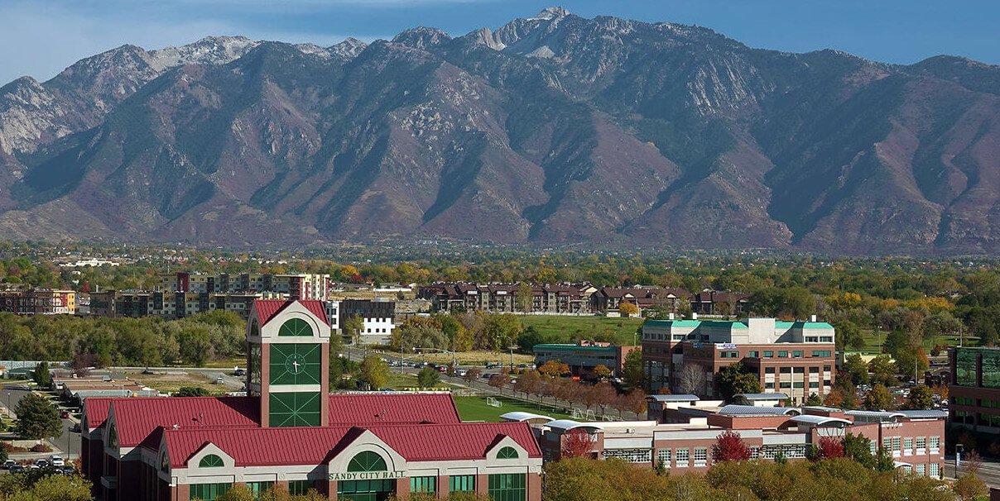

About Sandy
Recreation
Sandy is just south of Salt Lake City and sits at the base of the wasatch mountains. Big and Little Cottonwood Canyons are just minutes away, so if you love to ski, hike, mountainbike, or climb you will have quick and easy access to the trails and ski resorts. Come and see the beautiful wasatch mountains!
Downtown Salt Lake City is just minutes away so you will always have many choices for what to eat for dinner.
Demographics
According Wikipedia, "as of 2017, there were 96,145 people in Sandy. The racial makeup of the county was 84.6% non-Hispanic White, 0.7% Black, 0.4% Native American, 3.0% Asian, 0.7 Pacific Islander, and 2.1% from two or more races. 8.9% of the population were Hispanic or Latino of any race."
Learn More
Click here to learn why Sandy is called Sandy.
Upcoming Activities
Sandy City Country Fair
Location: West of City Hall
Date: May 15, 2021
More Info...
Fourth of July Celebration
Location: Southtown Mall
Date: July 4, 2021
More Info...
Movies at the Park
Location: Falcon Park
Date: August 21, 2021
More Info...